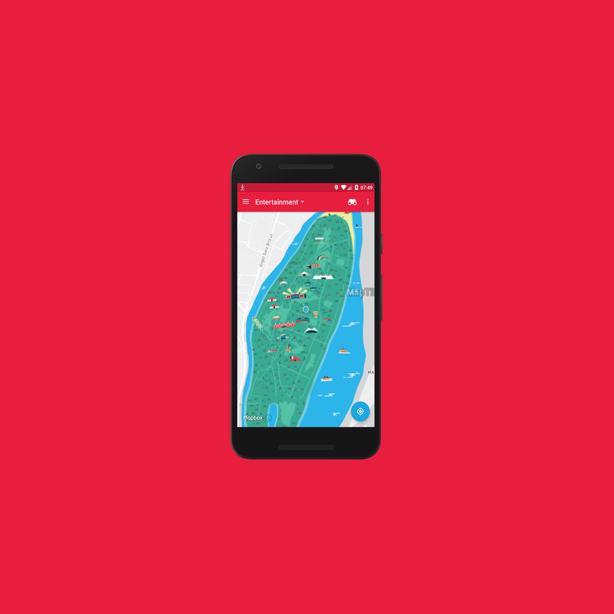

Jesse Nijdam
Festival App
App for the Sziget Festival
Industrial Design Bachelor - TU Delft
Android app build for the software elective in the Industrial Design Bachelor of the TU Delft
It contained a schedule of performances with images and description. Those could be favourited as well. The schedule could be filtered by day. In addition it contained a stylised map that could show your location on the festival as well as the stage where a specific performance took place.

Key skills
UI and UX Design
Contributed to the UI design, as well as developing the flow of the pages in the interface.
Android Development
Written in Java